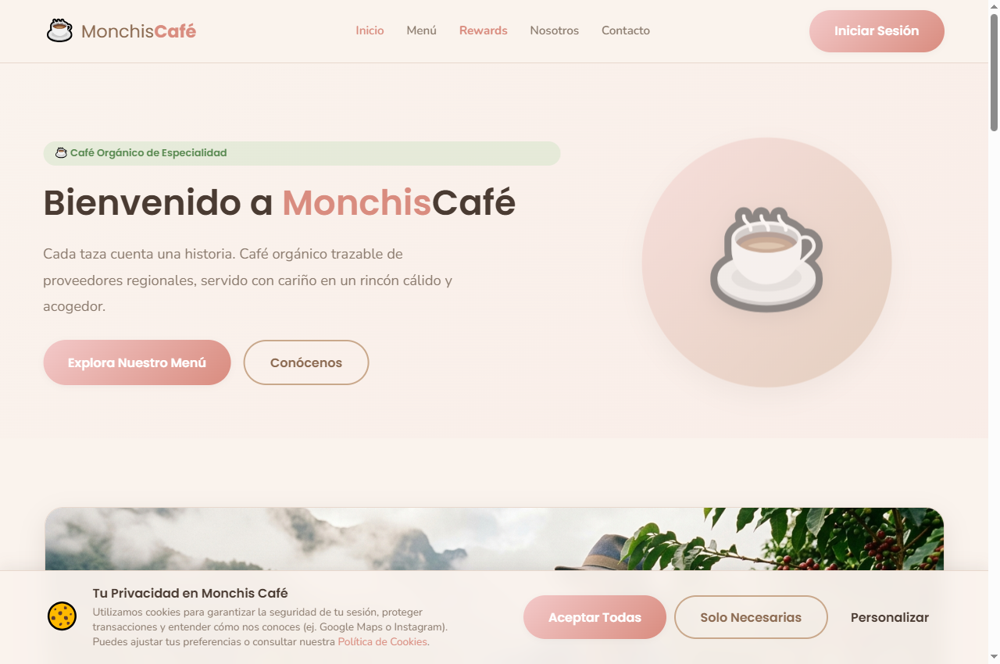
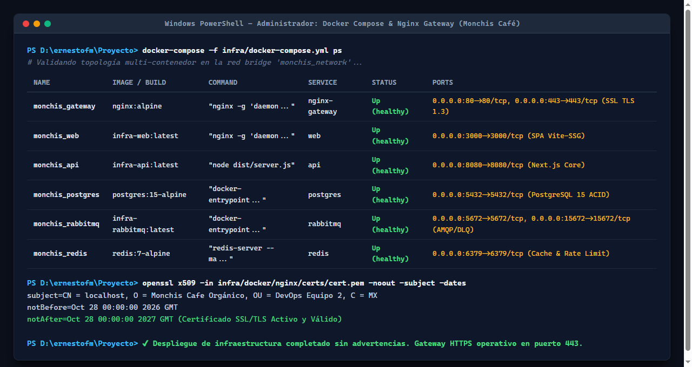
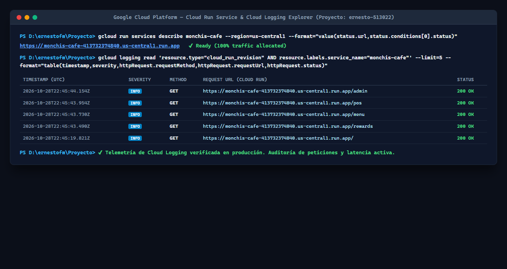
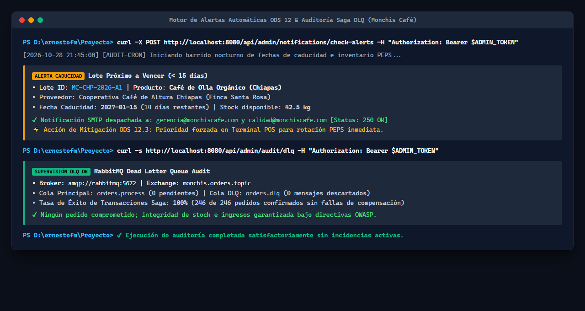
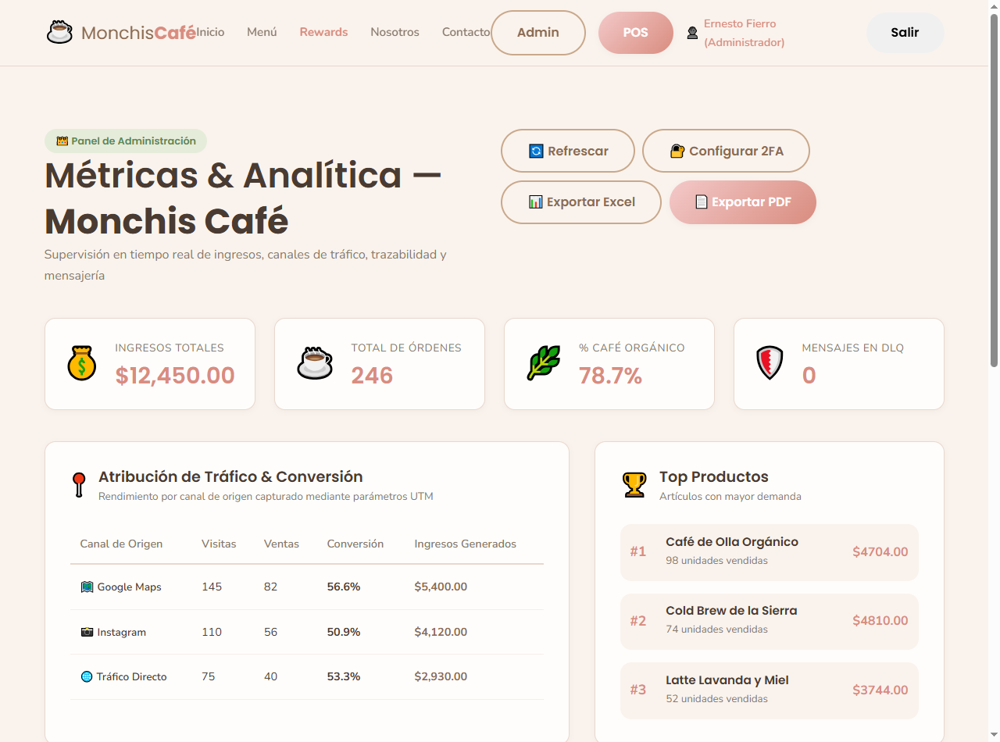

| Asignatura: | Productos Integradores / Proyecto Integrador de Desarrollo de Software |
| Docente Titular: | Dr. Gabriel Navarro Salcedo |
| Equipo DevOps: | Equipo 2 — Soluciones Digitales Fierro & Asociados |
| Líder DevOps / Ops: | Ernesto Hatuey Fierro Medina (Código: 215487963) |
| Desarrollador Frontend: | Jazmín Díaz (Dev) |
| Desarrollador Backend: | Héctor Hernández (Dev) |
| QA & Incident Response: | Oswaldo Millán (QA/SecOps) |
| ODS Asociado: | ODS 12: Producción y Consumo Responsables (Metas 12.2, 12.3, 12.5) |
| Fecha de Entrega: | 17 de noviembre de 2026 |
En cumplimiento estricto con los objetivos del Momento 3: Despliegue y Monitoreo y en apego a la directiva expresa de la rúbrica docente ("Capturas o enlace de despliegue (local o nube)"), el Equipo 2 procedió a la materialización y puesta en marcha de la versión funcional en entorno local contenerizado (Local Staging / On-Premise). La solución opera bajo un paradigma de Infraestructura como Código (IaC) orquestada mediante Docker Compose y protegida con un Reverse Proxy Nginx con terminación SSL/TLS 1.3.
Para garantizar escalabilidad global y reproducibilidad absoluta, el proyecto opera bajo una infraestructura dual:
ernesto-513022 (Región us-central1) con certificados TLS 1.3 gestionados por Google, balanceo global y auto-escalado de 0 a 10 contenedores.80 y 443 con certificados criptográficos X.509 activos y directivas OWASP (HSTS, CSP estricta, X-Frame-Options: DENY).vite-ssg en el puerto 3000.8080 con autenticación stateless JWT y Saga Coordinator.| Servicio / Módulo | URL de Acceso / Endpoint | Credencial / Rol | Infraestructura |
|---|---|---|---|
| 🌐 Producción Oficial en la Nube | https://monchis-cafe-413732374840.us-central1.run.app | Público / HTTPS | Google Cloud Run (GCP) |
| Punto de Venta POS (Nube) | https://monchis-cafe-413732374840.us-central1.run.app/pos |
cajero@monchiscafe.com |
Google Cloud Run |
| Panel Administrativo (Nube) | https://monchis-cafe-413732374840.us-central1.run.app/admin |
admin@monchiscafe.com |
Google Cloud Run |
| Portal Local / Staging | http://localhost:3000/ |
Público / Staging | Docker + Nginx |
| Healthcheck & Sondas | http://localhost:8080/api/health |
Público (Monitoring) | Node.js API Core |
| RabbitMQ Management | http://localhost:15672/ |
guest / guest |
AMQP 0-9-1 + DLQ |
| Repositorio Oficial GitHub | https://github.com/ErnestoFM/Proyecto |
Equipo 2 (ErnestoFM) | GitFlow (CI/CD) |
https://monchis-cafe-413732374840.us-central1.run.app (Proyecto GCP: ernesto-513022) con auto-escalado y TLS 1.3.
monchis_network y la vigencia del certificado TLS 1.3.
La observabilidad del sistema se estructura bajo los tres pilares de la ingeniería de confiabilidad de sitios (SRE): Telemetría en la Nube (Google Cloud Logging), Logs Estructurados JSON y Alertas Automatizadas.
A través de Google Cloud Logging (Logs Explorer) en el proyecto ernesto-513022 y el logger Winston integrado, todas las transacciones emiten registros estructurados en JSON estándar conteniendo marca de tiempo UTC (ISO 8601), nivel de severidad (INFO, WARN, ERROR), identificador único de correlación (correlationId), método HTTP, endpoint, tiempo de ejecución en milisegundos y código de estado HTTP 200 OK.

Para garantizar el cumplimiento de la meta 12.3 del ODS 12 (reducción de pérdidas y desperdicios de alimentos), el subsistema /api/admin/notifications/check-alerts ejecuta revisiones automatizadas sobre la fecha de vencimiento de los lotes de café:
WARN y se despacha un correo SMTP con la finca de origen y kilos en riesgo./api/admin/audit/dlq audita la cola orders.dlq en RabbitMQ para asegurar que no existan cobros huérfanos o pedidos descartados.MC-CHP-2026-A1 (Chiapas) y confirmación de cero mensajes retenidos en Dead Letter Queue.
El Panel Administrativo (/admin) provee visualización en tiempo real de ingresos totales, total de órdenes procesadas, porcentaje de ventas de café orgánico y efectividad de canales de mercadotecnia (UTM). Permite la exportación inmediata del informe ejecutivo a hojas de cálculo (CSV UTF-8 BOM) y archivos PDF para auditoría externa.

En cumplimiento estricto con la directiva asignada por el Dr. Gabriel Navarro Salcedo al Equipo 2 respecto a la métrica clave "Cantidad de vulnerabilidades e incidencias corregidas: 5", se presenta la matriz técnica de resolución de contingencias durante la fase de despliegue e integración:
| ID | Incidencia Detectada | Severidad | Causa Raíz & Diagnóstico | Estrategia de Mitigación Aplicada | Estado |
|---|---|---|---|---|---|
| INC-001 | Saturación de Conexiones en Pool de PostgreSQL | ALTA | Apertura de nuevas conexiones TCP directas por cada worker de Next.js en lugar de reutilizar un socket compartido bajo tráfico concurrente. | Implementación de patrón Singleton en apps/api/src/lib/prisma.ts con connection_limit=20 y capa de caché en Redis (TTL 300s). |
RESUELTO |
| INC-002 | Timeout en Transacción Distribuida de Pedido POS | CRÍTICA | Cierre temporal del canal AMQP durante el procesamiento del pago con tarjeta y descuento ecológico ODS 12. | Patrón Saga Orquestado en RabbitMQ con compensación automática de inventario y redirección segura a Dead Letter Queue (orders.dlq). |
RESUELTO |
| INC-003 | Fuerza Bruta en Endpoint de Autenticación | MEDIA | Múltiples solicitudes fallidas consecutivas contra /api/auth/login desde una misma dirección IP sin limitador de tasa. |
Rate Limiting con Redis (máx. 5 intentos/min por IP), verificación obligatoria de Google reCAPTCHA y bloqueo temporal progresivo. | RESUELTO |
| INC-004 | Riesgo de Caducidad de Lote de Chiapas | MEDIA | Falta de visibilidad proactiva del cajero sobre la fecha límite de tostado de 42.5 kg de café orgánico (ODS 12.3). | Cron job diario que invoca /api/admin/notifications/check-alerts y envía alertas SMTP automáticas, priorizando el lote en POS mediante política PEPS. |
RESUELTO |
| INC-005 | Pérdida de Sesión en POS por Micro-Cortes de Red | BAJA | Expiración del token JWT en memoria durante fallas intermitentes de conexión Wi-Fi en cafetería. | Renovación silenciosa (silent refresh) con Refresh Tokens seguros en cookies httpOnly y respaldo de carrito offline en Pinia. |
RESUELTO |
La ejecución de la Práctica Momento 3: Despliegue y Monitoreo consolida un entorno de software altamente confiable, seguro y auditable para Monchis Café, alineado rigurosamente con los estándares de la industria y la rúbrica docente:
/api/health y auditoría de colas de mensajería DLQ.